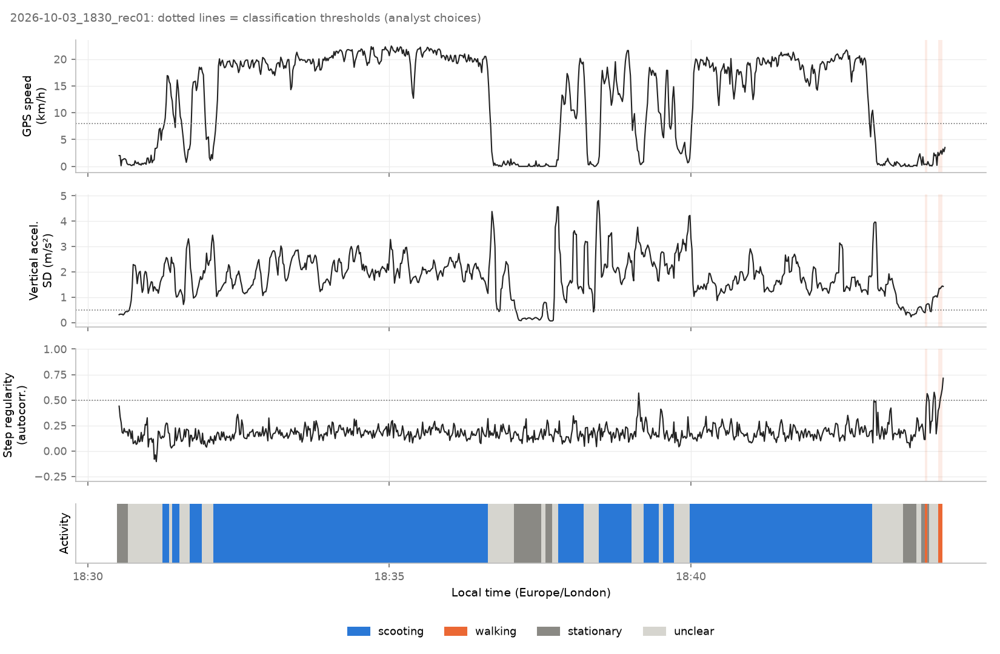
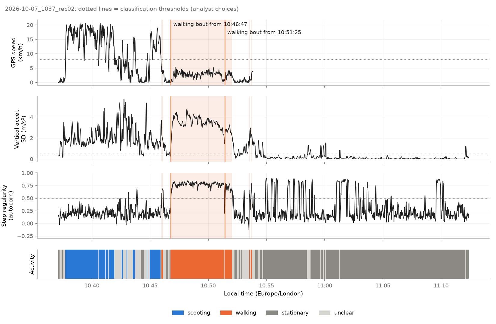
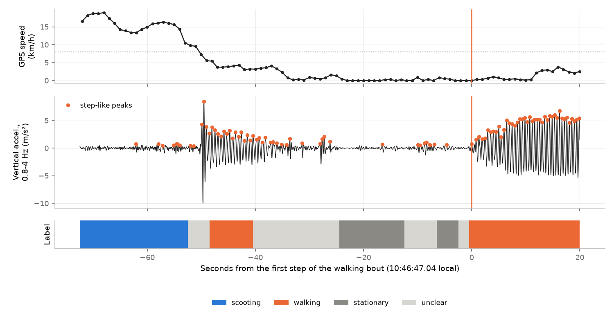
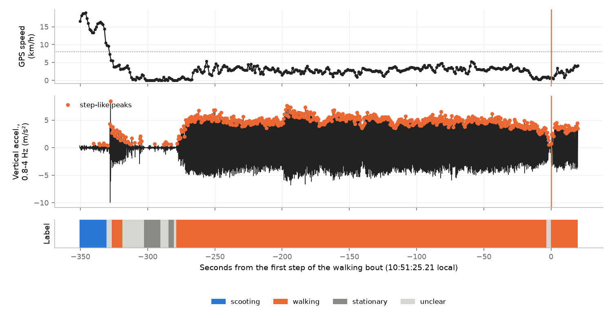
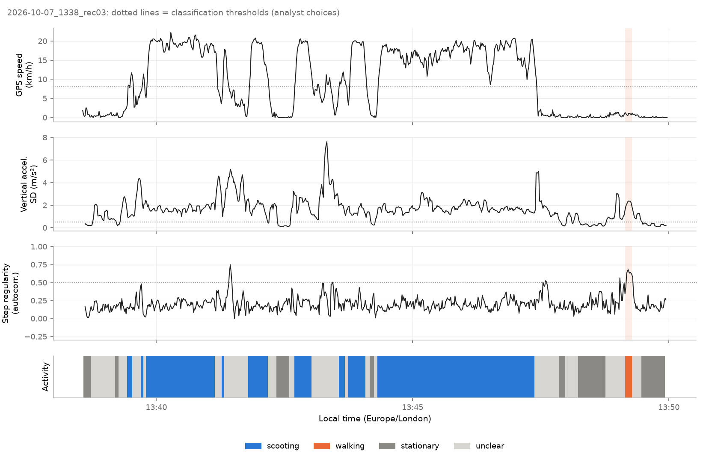

Sensor Logger validity: data quality and walking vs scooting
Generated by scripts/sensor_validity.py. Thresholds are analyst choices. Detected times are model estimates; accuracy can only be judged against the ground truth below.
Ground truth comparison
| recording | event | reference | precision | source | detected | result | difference_s |
|---|---|---|---|---|---|---|---|
| 2026-10-03_1830_rec01 | no_walking | whole recording | rider 2026-10-07 | 6 s labelled walking after smoothing (0.7% of 821 windows; 9 before smoothing); 0 walking bouts >= 10 s; 0 walking windows at GPS >= 8 km/h | false-positive windows only, no false bout | – | |
| 2026-10-07_1037_rec02 | walking_start | 2026-10-07 10:47:06 | approximate (about a minute) | rider recollection 2026-10-07 | 2026-10-07 10:46:47.04 | difference within the reference's precision | -19.0 |
| 2026-10-07_1037_rec02 | rental_end | 2026-10-07 10:46:00 | minute (shown as 10:46; true time 10:46:00-10:46:59) | Voi app ride history (read by the rider) 2026-10-07 | last scooting segment ends 10:45:54; next walking bout first step 10:46:47.04 | order consistent: riding ends before the rental-end minute closes and walking starts after it opens (10:46:00-10:47:00) | – |
| 2026-10-07_1338_rec03 | no_walking | whole recording | rider 2026-10-07 | 8 s labelled walking after smoothing (1.2% of 681 windows; 9 before smoothing); 0 walking bouts >= 10 s; 0 walking windows at GPS >= 8 km/h | false-positive windows only, no false bout | – |
Data quality summary
| recording | Accelerometer.rate_hz | Accelerometer.dt_median_ms | Accelerometer.dt_p99_ms | Accelerometer.gaps | Accelerometer.max_gap_s | Accelerometer.non_monotonic | Accelerometer.duplicates | Accelerometer.clock_vs_elapsed_max_ms | AccelerometerUncalibrated.rate_hz | AccelerometerUncalibrated.dt_median_ms | AccelerometerUncalibrated.dt_p99_ms | AccelerometerUncalibrated.gaps | AccelerometerUncalibrated.max_gap_s | AccelerometerUncalibrated.non_monotonic | AccelerometerUncalibrated.duplicates | AccelerometerUncalibrated.clock_vs_elapsed_max_ms | Gravity.rate_hz | Gravity.dt_median_ms | Gravity.dt_p99_ms | Gravity.gaps | Gravity.max_gap_s | Gravity.non_monotonic | Gravity.duplicates | Gravity.clock_vs_elapsed_max_ms | Gyroscope.rate_hz | Gyroscope.dt_median_ms | Gyroscope.dt_p99_ms | Gyroscope.gaps | Gyroscope.max_gap_s | Gyroscope.non_monotonic | Gyroscope.duplicates | Gyroscope.clock_vs_elapsed_max_ms | GyroscopeUncalibrated.rate_hz | GyroscopeUncalibrated.dt_median_ms | GyroscopeUncalibrated.dt_p99_ms | GyroscopeUncalibrated.gaps | GyroscopeUncalibrated.max_gap_s | GyroscopeUncalibrated.non_monotonic | GyroscopeUncalibrated.duplicates | GyroscopeUncalibrated.clock_vs_elapsed_max_ms | Location.rate_hz | Location.dt_median_ms | Location.dt_p99_ms | Location.gaps | Location.max_gap_s | Location.non_monotonic | Location.duplicates | Location.clock_vs_elapsed_max_ms | accel_raw_vs_fused.pairs | accel_raw_vs_fused.residual_median_g | accel_raw_vs_fused.residual_p95_g | at_rest.method | at_rest.windows | at_rest.user_acc_sd_ms2_median | at_rest.gyro_sd_rads_median | at_rest.raw_acc_norm_mean_g | at_rest.raw_acc_norm_sd_g | at_rest.gyro_cal_minus_uncal_mean_rads | gps.fixes | gps.invalid_speed_share | gps.hacc_median_m | gps.hacc_p90_m | gps.speed_reported_vs_position_median_abs_ms | gps.speed_pairs_compared | gps.gps_valid_speed_rows | gps.stationary_scatter_median_m | gps.stationary_scatter_p90_m |
|---|---|---|---|---|---|---|---|---|---|---|---|---|---|---|---|---|---|---|---|---|---|---|---|---|---|---|---|---|---|---|---|---|---|---|---|---|---|---|---|---|---|---|---|---|---|---|---|---|---|---|---|---|---|---|---|---|---|---|---|---|---|---|---|---|---|---|---|
| 2026-10-03_1830_rec01 | 99.72 | 10.028 | 10.029 | 0 | 0.011 | 0 | 0 | 0.0 | 99.72 | 10.028 | 10.029 | 0 | 0.010 | 0 | 0 | 0.0 | 99.72 | 10.028 | 10.029 | 0 | 0.011 | 0 | 0 | 0.0 | 99.72 | 10.028 | 10.029 | 0 | 0.011 | 0 | 0 | 0.0 | 99.72 | 10.028 | 10.029 | 0 | 0.01 | 0 | 0 | 0.0 | 0.98 | 999.972 | 1000.578 | 2 | 17.128 | 0 | 0 | 0.0 | 82233 | 0.0485 | 0.1604 | quietest 5% of 4 s windows | 10 | 0.3069 | 0.1578 | 1.0023 | 0.0250 | [0.0024, 0.0046, -0.0018] | 828 | 0.006 | 11.5 | 15.1 | 0.38 | 607 | 823 | 0.7 | 2.1 |
| 2026-10-07_1037_rec02 | 99.72 | 10.028 | 10.030 | 0 | 0.012 | 0 | 0 | 0.0 | 99.72 | 10.028 | 10.030 | 0 | 0.012 | 0 | 0 | 0.0 | 99.72 | 10.028 | 10.030 | 0 | 0.012 | 0 | 0 | 0.0 | 99.72 | 10.028 | 10.030 | 0 | 0.012 | 0 | 0 | 0.0 | 99.72 | 10.028 | 10.030 | 0 | 0.01 | 0 | 0 | 0.0 | 0.55 | 1000.028 | 12000.497 | 144 | 14.997 | 0 | 0 | 0.0 | 211261 | 0.0071 | 0.0924 | quietest 5% of 4 s windows | 26 | 0.0123 | 0.0035 | 0.9944 | 0.0009 | [0.0021, 0.0049, -0.0018] | 1160 | 0.133 | 11.3 | 15.5 | 0.64 | 479 | 1006 | 0.1 | 1.7 |
| 2026-10-07_1338_rec03 | 99.72 | 10.028 | 10.030 | 0 | 0.011 | 0 | 0 | 0.0 | 99.72 | 10.028 | 10.030 | 0 | 0.010 | 0 | 0 | 0.0 | 99.72 | 10.028 | 10.030 | 0 | 0.011 | 0 | 0 | 0.0 | 99.72 | 10.028 | 10.030 | 0 | 0.011 | 0 | 0 | 0.0 | 99.72 | 10.028 | 10.030 | 0 | 0.01 | 0 | 0 | 0.0 | 1.00 | 1000.011 | 1000.364 | 0 | 1.001 | 0 | 0 | 0.0 | 68227 | 0.0128 | 0.0531 | quietest 5% of 4 s windows | 8 | 0.1856 | 0.0948 | 1.0029 | 0.0169 | [0.0018, 0.0051, -0.0023] | 686 | 0.000 | 13.9 | 17.6 | 0.52 | 423 | 686 | 0.5 | 1.6 |
2026-10-03_1830_rec01
Start 2026-10-03 18:30:29 · 13.7 min · time per class (s): scooting 564, walking 6, stationary 64, unclear 187

2026-10-07_1037_rec02
Start 2026-10-07 10:37:06 · 35.3 min · time per class (s): scooting 321, walking 330, stationary 1103, unclear 361



| bout_start_s | bout_end_s | bout_duration_s | first_step_s | first_step_local | steps_in_bout | gps_moving_lag_s | median_cadence | median_speed_kmh |
|---|---|---|---|---|---|---|---|---|
| 580.1 | 855.1 | 275.0 | 580.57 | 2026-10-07 10:46:47.04 | 562.0 | 12.0 | 2.04 | 2.9 |
| 859.1 | 896.1 | 37.0 | 858.74 | 2026-10-07 10:51:25.21 | 69.0 | 3.8 | 1.89 | 2.7 |
2026-10-07_1338_rec03
Start 2026-10-07 13:38:34 · 11.4 min · time per class (s): scooting 347, walking 8, stationary 100, unclear 226
